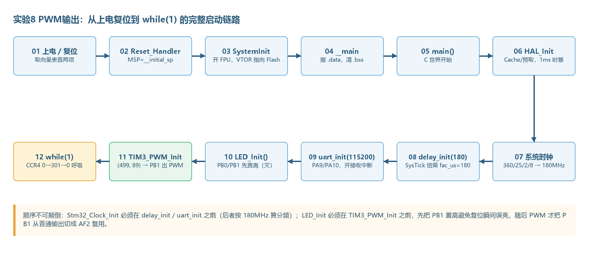
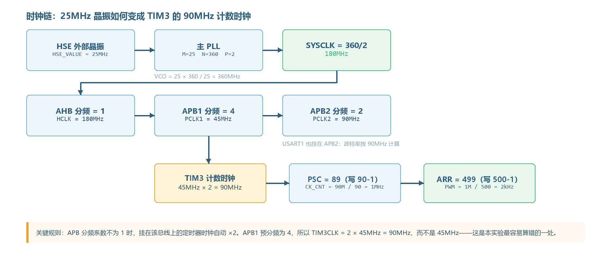
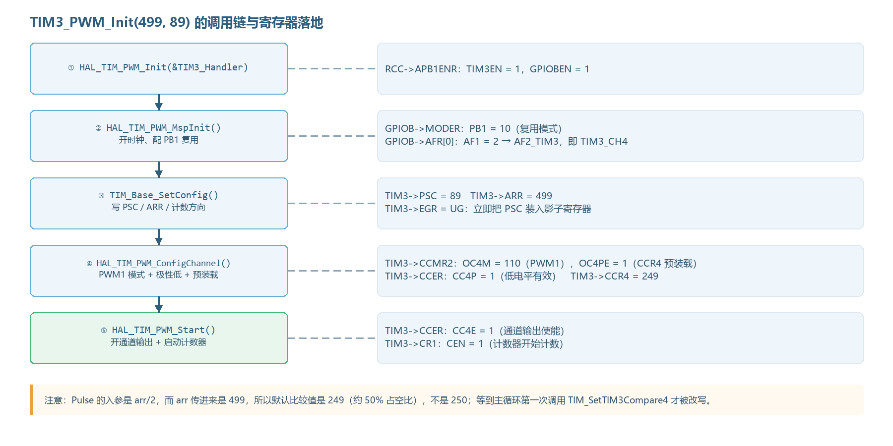
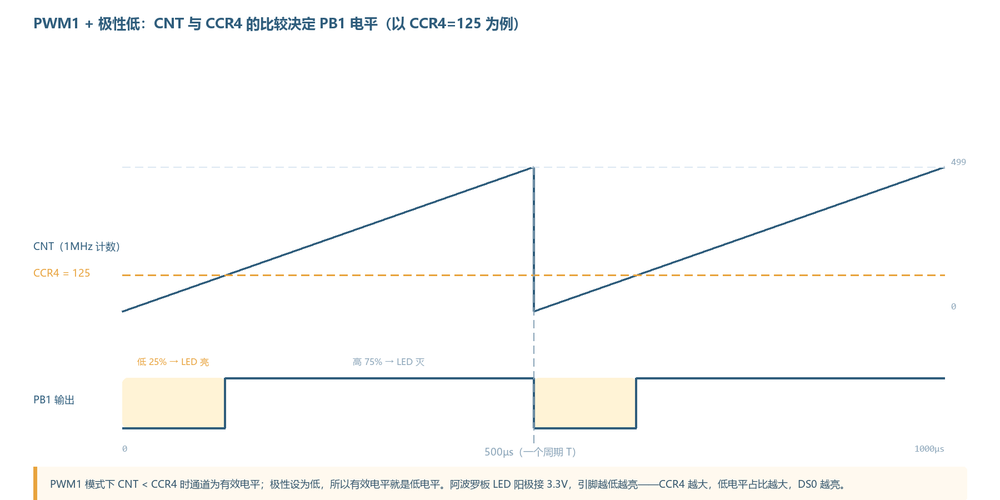
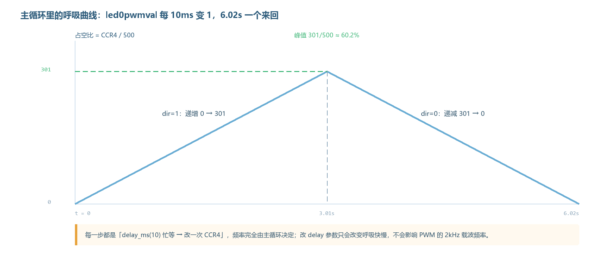

01 实验目标与硬件资源
本页只讲一件事：从上电到 while(1)，TIM3_CH4 是怎么在 PB1 上输出 2kHz PWM 的
工程是正点原子阿波罗 STM32F429 开发板的标准例程「实验8 PWM输出实验」，Keil 工程文件为 USER/PWM.uvprojx，器件 STM32F429IGTx，预处理宏为 USE_HAL_DRIVER, STM32F429xx。实验现象：DS0 亮度由暗到亮再到暗，往复“呼吸”，DS1 始终不亮。
| 对比项 | 实验7 定时器中断 | 实验8 PWM输出（本实验） |
|---|
| 波形从哪来 | CPU 在中断里翻转 IO | TIM3 硬件比较输出，CPU 不参与 |
| CPU 负担 | 每 500ms 进一次中断 | 只在主循环里改一次 CCR4 |
| 频率精度 | 受中断响应与主循环影响 | 由 PSC/ARR 决定，硬件保证 |
| 可调量 | 翻转次数 → 闪灯快慢 | CCR4 → 占空比 → 亮度 |
| 资源 | 连接 | 在工程中的落点 |
|---|
| DS0（黄灯） | PB1 → TIM3_CH4（AF2） | GPIOB、TIM3 |
| DS1（红灯） | PB0 → 普通推挽输出 | LED_Init() 置高后不再改动 |
| 串口1 | PA9(TX) / PA10(RX) | uart_init(115200) |
| 系统时钟 | HSE 25MHz → PLL → 180MHz | Stm32_Clock_Init(360,25,2,8) |
PB1 → AF2 → TIM3_CH4
TIM3CLK 90MHz
PSC=89 → 1MHz
ARR=499 → 2kHz
注意区分两个“灯”：本实验被 PWM 驱动的是 DS0 / PB1，不是实验7 里用中断翻转的 DS1 / PB0。
02 工程目录与文件分工
十个源文件里，真正参与启动链路的只有六个，其余是库与本页不关心的旧代码
| 文件 | 负责什么 | 本页关注点 |
|---|
CORE/startup_stm32f429xx.s | 栈堆定义、向量表、Reset_Handler | 复位后第一段代码 |
USER/system_stm32f4xx.c | SystemInit：FPU、VTOR、RCC 复位 | 进 main 之前做了什么 |
USER/main.c | 六个初始化 + 呼吸循环 | 初始化顺序与主循环 |
SYSTEM/sys/sys.c | Stm32_Clock_Init：PLL 与总线分频 | 180MHz / 45MHz 从哪来 |
SYSTEM/delay/delay.c | SysTick 忙等延时 | 10ms 步进的来源 |
SYSTEM/usart/usart.c | USART1 + printf 重定向 | 本实验不打印，但仍执行初始化 |
HARDWARE/LED/led.c | PB0/PB1 推挽输出并置高 | 先把灯关掉，再由 PWM 接管 |
HARDWARE/TIMER/timer.c | TIM3 PWM 初始化与 CCR4 写入 | 本实验核心 |
USER/stm32f4xx_it.c | Core 异常 + SysTick_Handler | 本实验没有 TIM3 中断 |
HALLIB/... | HAL 库本体 | 只在需要时引用片段 |
两处容易被忽略的细节
timer.h 里仍留着 void TIM3_Init(u16 arr,u16 psc); 的声明，但 timer.c 并没有实现它——因为没有任何地方调用，链接阶段不会报错。USART1_IRQHandler 定义在 usart.c 末尾，而不是 stm32f4xx_it.c，所以排查串口中断时要找对文件。
本页所有结论都能落到“文件 + 函数 + 关键语句”，凡是工程里找不到的配置，一律不写。
03 启动流程总览
复位 → 向量表 → SystemInit → __main → main 的六次初始化 → while(1)

图 3-1 从上电复位到 while(1) 的完整启动链路
main 函数全文
int main(void)
{
u8 dir=1;
u16 led0pwmval=0;
HAL_Init(); //初始化HAL库
Stm32_Clock_Init(360,25,2,8); //设置时钟,180Mhz
delay_init(180); //初始化延时函数
uart_init(115200); //初始化USART
LED_Init(); //初始化LED
TIM3_PWM_Init(500-1,90-1); //90M/90=1M的计数频率，自动重装载为500，那么PWM频率为1M/500=2kHZ
while(1)
{
delay_ms(10);
if(dir)led0pwmval++; //dir==1 led0pwmval递增
else led0pwmval--; //dir==0 led0pwmval递减
if(led0pwmval>300)dir=0; //led0pwmval到达300后，方向为递减
if(led0pwmval==0)dir=1; //led0pwmval递减到0后，方向改为递增
TIM_SetTIM3Compare4(led0pwmval); //修改比较值，修改占空比
}
}
为什么必须按这个顺序
| 顺序 | 原因 |
|---|
HAL_Init 最先 | 建立 1ms 时基与优先级分组，后面调用任何 HAL_Delay / 超时轮询都依赖它 |
Stm32_Clock_Init 早于外设 | delay_init(180) 与 uart_init(115200) 的分频都按 180MHz 计算，时钟没配好就全错 |
LED_Init 早于 TIM3_PWM_Init | 先把 PB1 当普通输出拉高（灯灭），避免复位瞬间引脚悬空导致误亮；随后 PWM 才把 PB1 切成复用 |
TIM3_PWM_Init 放最后 | 它会把 PB1 从输出模式改为 AF2，之后再改 PB1 的 GPIO 配置就会覆盖掉 PWM 输出 |
上电到 main 之前还有两段代码：启动文件的 Reset_Handler 和 SystemInit，以及 C 库的 __main（搬 .data、清 .bss）。它们不在这份 main.c 里，容易在分析“启动过程”时被漏掉。
04 启动文件与向量表
栈 1KB、堆 512B，向量表第 0 项是栈顶，第 1 项是复位入口
启动文件 CORE/startup_stm32f429xx.s 先定义栈与堆，再定义向量表 __Vectors。Cortex-M4 复位时硬件自动做两件事：从 0x08000000 取第一个字写入 MSP，从 0x08000004 取第二个字写入 PC。
Stack_Size EQU 0x400; ; 栈 1KB
Heap_Size EQU 0x200; ; 堆 512B
__Vectors DCD __initial_sp ; 第 0 项：栈顶地址
DCD Reset_Handler ; 第 1 项：复位入口
DCD NMI_Handler
DCD HardFault_Handler
DCD MemManage_Handler
DCD BusFault_Handler
DCD UsageFault_Handler
...
; Reset handler
Reset_Handler PROC
EXPORT Reset_Handler [WEAK]
IMPORT SystemInit
IMPORT __main
LDR R0, =SystemInit
BLX R0
LDR R0, =__main
BX R0
ENDP
| 项 | 值 / 行为 | 说明 |
|---|
| 栈大小 | 0x400 = 1KB | 所有函数调用、局部变量、中断嵌套都吃这块 |
| 堆大小 | 0x200 = 512B | 本实验不用 malloc，实际闲置 |
| 复位入口 | Reset_Handler | 先调 SystemInit，再跳 __main |
| 异常处理 | 全部带 [WEAK] | 同名强符号会覆盖弱定义，这是 SysTick_Handler 能被 stm32f4xx_it.c 接管的原因 |
启动文件把所有中断服务函数都写成 WEAK 的空实现：只要在 C 文件里写同名函数（不带 WEAK），链接器就会用你的版本。本实验只覆盖了 SysTick_Handler（在 stm32f4xx_it.c）和 USART1_IRQHandler（在 usart.c）。
05 SystemInit 与 HAL_Init
前者在 main 之前、由启动文件调用；后者是 main 的第一行，负责 Cache、优先级分组和 1ms 时基
SystemInit：只做三件“打地基”的事
void SystemInit(void)
{
/* FPU settings */
#if (__FPU_PRESENT == 1) && (__FPU_USED == 1)
SCB->CPACR |= ((3UL << 10*2)|(3UL << 11*2)); /* CP10/CP11 全访问 */
#endif
RCC->CR |= (uint32_t)0x00000001; /* 打开 HSI */
RCC->CFGR = 0x00000000; /* 时钟树回到复位态 */
RCC->PLLCFGR = 0x24003010;
RCC->CIR = 0x00000000; /* 关闭所有中断 */
#ifdef VECT_TAB_SRAM
SCB->VTOR = SRAM_BASE | VECT_TAB_OFFSET;
#else
SCB->VTOR = FLASH_BASE | VECT_TAB_OFFSET; /* 向量表在 Flash */
#endif
}
此时系统时钟还是复位默认的 HSI 16MHz，真正的 180MHz 要等 main 里调用 Stm32_Clock_Init。顺序上不能颠倒：HAL_Init 里的 SysTick 是按当时的主频算的，等主频改成 180MHz，HAL_RCC_ClockConfig 会自动重算 SysTick 参数。
HAL_Init：四个动作
HAL_StatusTypeDef HAL_Init(void)
{
__HAL_FLASH_INSTRUCTION_CACHE_ENABLE(); /* INSTRUCTION_CACHE_ENABLE = 1 */
__HAL_FLASH_DATA_CACHE_ENABLE(); /* DATA_CACHE_ENABLE = 1 */
__HAL_FLASH_PREFETCH_BUFFER_ENABLE(); /* PREFETCH_ENABLE = 1 */
HAL_NVIC_SetPriorityGrouping(NVIC_PRIORITYGROUP_2); /* 2 位抢占 + 2 位子优先级 */
HAL_InitTick(TICK_INT_PRIORITY); /* TICK_INT_PRIORITY = 0x0F，SysTick 1ms */
HAL_MspInit(); /* 本工程为空实现 */
return HAL_OK;
}
| 动作 | 写的是哪里 | 对本实验的影响 |
|---|
| I/D Cache + 预取 | FLASH->ACR | 180MHz 下取指效率，肉眼看不到但影响性能 |
| 优先级分组 = 2 | SCB->AIRCR | 后面 HAL_NVIC_SetPriority(USART1_IRQn,3,3) 的 3/3 才有意义 |
| SysTick 1ms | SysTick->LOAD/VAL | 提供 uwTick，也是 delay_us 读的计数器 |
| SysTick 优先级 | NVIC | 0x0F 为最低，不会抢占业务中断 |
本工程 USE_RTOS = 0，所以 delay.c 走的是“不用 OS”的分支：SysTick 只由 HAL 配置成 1ms 中断，delay_us 靠轮询 SysTick->VAL 计时。
06 系统时钟配置
25MHz 晶振 → VCO 360MHz → SYSCLK 180MHz，FLASH 等 5 个等待周期
void Stm32_Clock_Init(u32 plln,u32 pllm,u32 pllp,u32 pllq) // main 里传 (360,25,2,8)
{
__HAL_RCC_PWR_CLK_ENABLE(); // 使能 PWR 时钟
__HAL_PWR_VOLTAGESCALING_CONFIG(PWR_REGULATOR_VOLTAGE_SCALE1);
RCC_OscInitStructure.OscillatorType=RCC_OSCILLATORTYPE_HSE; // 时钟源 HSE
RCC_OscInitStructure.HSEState=RCC_HSE_ON;
RCC_OscInitStructure.PLL.PLLState=RCC_PLL_ON;
RCC_OscInitStructure.PLL.PLLSource=RCC_PLLSOURCE_HSE;
RCC_OscInitStructure.PLL.PLLM=pllm; // 25
RCC_OscInitStructure.PLL.PLLN=plln; // 360
RCC_OscInitStructure.PLL.PLLP=pllp; // 2
RCC_OscInitStructure.PLL.PLLQ=pllq; // 8
ret=HAL_RCC_OscConfig(&RCC_OscInitStructure);
if(ret!=HAL_OK) while(1);
ret=HAL_PWREx_EnableOverDrive(); // 180MHz 必须开 Over-Drive
if(ret!=HAL_OK) while(1);
RCC_ClkInitStructure.SYSCLKSource=RCC_SYSCLKSOURCE_PLLCLK;
RCC_ClkInitStructure.AHBCLKDivider=RCC_SYSCLK_DIV1; // AHB /1
RCC_ClkInitStructure.APB1CLKDivider=RCC_HCLK_DIV4; // APB1 /4
RCC_ClkInitStructure.APB2CLKDivider=RCC_HCLK_DIV2; // APB2 /2
ret=HAL_RCC_ClockConfig(&RCC_ClkInitStructure,FLASH_LATENCY_5);
if(ret!=HAL_OK) while(1);
}
| 参数 | 写入值 | 计算 | 结果 |
|---|
PLLM | 25 | 25MHz / 25 | PLL 输入 1MHz |
PLLN | 360 | 1MHz × 360 | VCO = 360MHz |
PLLP | 2 | 360 / 2 | SYSCLK = 180MHz |
PLLQ | 8 | 360 / 8 | 45MHz（USB/SDIO/RNG） |
| AHB | 1 | 180 / 1 | HCLK = 180MHz |
| APB1 | 4 | 180 / 4 | PCLK1 = 45MHz（TIM3 在这里） |
| APB2 | 2 | 180 / 2 | PCLK2 = 90MHz（USART1 在这里） |
两个失败处理值得注意：HAL_OK 判断失败后直接 while(1) 死等。如果板子上 HSE 不起振，程序会停在这里，表现就是“灯不亮、串口无输出”，而不是某个外设单独失效。
07 定时器时钟与分频计算
APB1 分频不为 1，定时器时钟自动 ×2：45MHz → 90MHz，这一步最容易算错

图 7-1 25MHz 晶振 → SYSCLK 180MHz → TIM3CLK 90MHz → PWM 2kHz
TIM3 挂在 APB1 总线上，使能位是 __HAL_RCC_TIM3_CLK_ENABLE()（即 RCC->APB1ENR 的 TIM3EN）。STM32F4 的参考手册规定：当 APB 预分频系数不为 1 时，该总线上定时器的时钟 = PCLK × 2。本工程 APB1 分频为 4，所以：
| 环节 | 算式 | 结果 |
|---|
| APB1 时钟 | 180MHz / 4 | 45MHz |
| TIM3 计数时钟 | 45MHz × 2 | 90MHz |
| 预分频 PSC | 90MHz / (89+1) | CK_CNT = 1MHz |
| 自动重装 ARR | 1MHz / (499+1) | PWM = 2kHz（T = 500µs） |
这也解释了 main 里那行注释的含义：TIM3_PWM_Init(500-1, 90-1) 的两个实参分别是“装载值 − 1”和“分频值 − 1”。寄存器里写的是 PSC=89、ARR=499，硬件实际分频是 90 和 500。
如果把 TIM3CLK 误当成 45MHz，会算出 PSC=44、PWM 变成 1kHz；占空比仍然对，但呼吸效果的“细粒度”和对 LED 的调光线性度会变。计算定时器参数前，先确认它挂在哪条 APB 上、那条 APB 的分频是多少。
08 delay 与 SysTick 时基
delay_ms(10) 是 CPU 忙等，它决定呼吸的快慢；与 PWM 的 2kHz 载波完全解耦
void delay_init(u8 SYSCLK) // main 里传 180
{
HAL_SYSTICK_CLKSourceConfig(SYSTICK_CLKSOURCE_HCLK); // SysTick 时钟 = HCLK
fac_us=SYSCLK; // fac_us = 180
// SYSTEM_SUPPORT_OS = 0，这里不再配置 SysTick，交给 HAL_Init 的 1ms 时基
}
void delay_us(u32 nus) // 不用 OS 的分支
{
u32 ticks;
u32 told,tnow,tcnt=0;
u32 reload=SysTick->LOAD;
ticks=nus*fac_us; // 需要的节拍数
told=SysTick->VAL; // SysTick 是递减计数器
while(1)
{
tnow=SysTick->VAL;
if(tnow!=told)
{
if(tnow<told)tcnt+=told-tnow;
else tcnt+=reload-tnow+told;
told=tnow;
if(tcnt>=ticks)break;
}
}
}
void delay_ms(u16 nms)
{
u32 i;
for(i=0;i<nms;i++) delay_us(1000);
}
| 项目 | 实际值 | 说明 |
|---|
| SysTick 时钟源 | HCLK = 180MHz | 由 HAL_SYSTICK_CLKSourceConfig 设置 |
| 1ms 节拍 | uwTick 自增 | 来自 HAL_Init 的 HAL_InitTick |
fac_us | 180 | 1µs 对应 180 个 HCLK 周期 |
delay_ms(10) | 10 × 1000µs 忙等 | CPU 空转，PWM 仍在硬件里独立运行 |
因为是忙等，delay_ms(10) 期间主循环无法做别的事。这也是为什么调光放在主循环“改参数”，而波形生成必须交给定时器硬件——两者分工不同。
09 GPIO 初始化与引脚复用
同一个 PB1 被初始化两次：先当普通输出拉高关灯，再切成 AF2 交给 TIM3_CH4
第一次：LED_Init 把 PB0/PB1 置高
void LED_Init(void)
{
GPIO_InitTypeDef GPIO_Initure;
__HAL_RCC_GPIOB_CLK_ENABLE(); //开启GPIOB时钟
GPIO_Initure.Pin=GPIO_PIN_0|GPIO_PIN_1; //PB1,0
GPIO_Initure.Mode=GPIO_MODE_OUTPUT_PP; //推挽输出
GPIO_Initure.Pull=GPIO_PULLUP;
GPIO_Initure.Speed=GPIO_SPEED_HIGH;
HAL_GPIO_Init(GPIOB,&GPIO_Initure);
HAL_GPIO_WritePin(GPIOB,GPIO_PIN_0,GPIO_PIN_SET); //PB0置1
HAL_GPIO_WritePin(GPIOB,GPIO_PIN_1,GPIO_PIN_SET); //PB1置1
}
第二次：MspInit 把 PB1 改为复用推挽
void HAL_TIM_PWM_MspInit(TIM_HandleTypeDef *htim)
{
GPIO_InitTypeDef GPIO_Initure;
__HAL_RCC_TIM3_CLK_ENABLE(); //使能定时器3
__HAL_RCC_GPIOB_CLK_ENABLE(); //开启GPIOB时钟
GPIO_Initure.Pin=GPIO_PIN_1; //PB1
GPIO_Initure.Mode=GPIO_MODE_AF_PP; //复用推挽输出
GPIO_Initure.Pull=GPIO_PULLUP;
GPIO_Initure.Speed=GPIO_SPEED_HIGH;
GPIO_Initure.Alternate= GPIO_AF2_TIM3; //PB1复用为TIM3_CH4
HAL_GPIO_Init(GPIOB,&GPIO_Initure);
}
| 引脚 | 第一次配置（LED_Init） | 第二次配置（MspInit） | 最终行为 |
|---|
| PB0 / DS1 | 推挽输出，置高 | 不改动 | 一直高电平 → 灯常灭 |
| PB1 / DS0 | 推挽输出，置高 | AF2 复用推挽，接 TIM3_CH4 | 由 PWM 占空比决定亮度 |
| PA9 / PA10 | 不涉及 | AF7_USART1 | 串口，本实验不打印 |
如果先调 TIM3_PWM_Init 再调 LED_Init，PB1 会被重新配成普通输出，PWM 波形就再也出不来了——现象是“灯常亮或常灭，完全不呼吸”。这类问题先查初始化顺序。
10 TIM3 PWM 初始化
TIM3_PWM_Init(499, 89) 一次调用完成：开时钟、配 PB1、写 PSC/ARR、选 PWM1 模式、启动通道与计数器

图 10-1 TIM3_PWM_Init 的调用链与寄存器落地
void TIM3_PWM_Init(u16 arr,u16 psc)
{
TIM3_Handler.Instance=TIM3; //定时器3
TIM3_Handler.Init.Prescaler=psc; //89
TIM3_Handler.Init.CounterMode=TIM_COUNTERMODE_UP; //向上计数
TIM3_Handler.Init.Period=arr; //499
TIM3_Handler.Init.ClockDivision=TIM_CLOCKDIVISION_DIV1;
HAL_TIM_PWM_Init(&TIM3_Handler); //内部会调 MspInit 与 TIM_Base_SetConfig
TIM3_CH4Handler.OCMode=TIM_OCMODE_PWM1; //模式选择PWM1
TIM3_CH4Handler.Pulse=arr/2; //默认比较值 = 499/2 = 249
TIM3_CH4Handler.OCPolarity=TIM_OCPOLARITY_LOW; //输出比较极性为低
HAL_TIM_PWM_ConfigChannel(&TIM3_Handler,&TIM3_CH4Handler,TIM_CHANNEL_4);
HAL_TIM_PWM_Start(&TIM3_Handler,TIM_CHANNEL_4); //开启PWM通道4
}
| 步骤 | 硬件动作 | 关键字段 / 值 |
|---|
| HAL_TIM_PWM_Init | 调 MspInit，再写时基 | PSC=89、ARR=499、EGR=UG |
| MspInit | 开 TIM3/GPIOB 时钟，PB1 → AF2 | MODER=10、AFR[0].AF1=2 |
| ConfigChannel | 配置通道 4 输出模式 | OC4M=110、OC4PE=1、CC4P=1、CCR4=249 |
| PWM_Start | 开通道输出并使能计数器 | CC4E=1、CEN=1 |
为什么 CCR4 有“预装载”
OC4PE = 1 表示 CCR4 写入的是预装载寄存器，要等到下一次更新事件（计数溢出）才生效。这样主循环随时改 CCR4，都不会把当前周期切成两半——对 2kHz 的载波来说，最坏延迟只有 500µs，肉眼看不出跳变，但能避免毛刺。
默认比较值是 arr/2 = 499/2 = 249（整数除法），占空比约 49.8%，不是精确的 50%。这个默认值只在上电后到主循环第一次写 CCR4 之间起作用。
11 占空比与引脚电平
PWM1 + 极性低：CNT < CCR4 时 PB1 输出低，灯亮；所以 CCR4 越大越亮

图 11-1 CNT 与 CCR4 的比较决定 PB1 的占空比（示例 CCR4=125）
PWM1 模式的规则是：CNT < CCR4 时通道为“有效电平”，否则为“无效电平”。极性被设为 TIM_OCPOLARITY_LOW，于是“有效”对应引脚输出低电平。阿波罗板的 LED 阳极接 3.3V，引脚拉低才导通，所以低电平占比就等于亮度占比。
| CCR4 | 低电平占比（=CCR4/500） | DS0 表现 | 出现在 |
|---|
| 0 | 0% | 完全灭 | 呼吸波谷 |
| 125 | 25% | 暗亮 | 上升/下降途中 |
| 249 | 49.8% | 中等亮度 | 初始化默认值 |
| 301 | 60.2% | 最亮（本实验峰值） | 呼吸波峰 |
| 499 | 99.8% | 接近常亮 | 主循环不会用到 |
主循环里 led0pwmval 最大只到 301，所以本实验的灯不会真的全亮，最亮时也只到约 60% 的占空比——这是源码里 if(led0pwmval>300)dir=0; 写死的。
如果发现“亮度正好反过来”（CCR4 越大越暗），通常是把极性写成了 TIM_OCPOLARITY_HIGH，或者板子的 LED 是高电平点亮。先确认原理图，再改极性，不要靠改占空比去凑。
12 主循环与呼吸效果
每 10ms 改一次 CCR4，从 0 加到 301 再减回 0，一个来回 6.02 秒

图 12-1 CCR4 的三角波变化：0 → 301 → 0，周期约 6.02s
while(1)
{
delay_ms(10);
if(dir)led0pwmval++; //dir==1 led0pwmval递增
else led0pwmval--; //dir==0 led0pwmval递减
if(led0pwmval>300)dir=0; //到达 300 后改为递减
if(led0pwmval==0)dir=1; //减到 0 后改为递增
TIM_SetTIM3Compare4(led0pwmval); //TIM3->CCR4 = led0pwmval
}
| 阶段 | 循环次数 | 耗时 | CCR4 变化 |
|---|
| 递增（dir=1） | 0 → 301，共 301 次 | 3.01s | 亮度由灭渐亮 |
| 递减（dir=0） | 301 → 0，共 301 次 | 3.01s | 亮度由亮渐灭 |
| 一个完整周期 | 602 次 | 6.02s | 一次“呼吸” |
注意那个判断写在自增之后：所以 led0pwmval 实际会先变成 301，再在下一轮被判为“大于 300”而转向；波峰是 301 而不是 300。
想改呼吸速度只改 delay_ms(10)；想改亮度上限只改 300 这个阈值；想改闪烁频率（载波）才需要动 TIM3_PWM_Init 的 ARR/PSC。三者互不影响。
13 现象与交互演示
对照真实现象，再用交互面板复现 main 循环里的方向切换逻辑
| 观察点 | 正常现象 | 原因 |
|---|
| DS0（PB1） | 由暗渐亮到约 60%，再渐暗，循环 | CCR4 三角波调制 2kHz PWM |
| DS1（PB0） | 始终不亮 | LED_Init 置高后再无改动 |
| 串口 | 无输出 | main 里没有调用 printf，uart 初始化只是保留 |
| 用示波器看 PB1 | 2kHz 方波，低电平占比随呼吸变化 | PSC=89、ARR=499 |
呼吸逻辑演示（对应 main 的 while(1)，仅演示逻辑，不涉及真实硬件）
DS0（PB1 / TIM3_CH4）
DS1（PB0，常灭）
CCR4 = 249 占空比 = 49.8% dir = 1 已暂停
演示把“10ms 一步”加速成“40ms 一步”，否则一个来回要等 6 秒才看得出方向变化。判定顺序与源码一致：先加减，再判 >300 / ==0。
14 总结与常见问题
一条链路串起来：复位 → 180MHz → 90MHz → 1MHz → 2kHz → CCR4 调制亮度
全链路回顾
- 复位取
__initial_sp 与 Reset_Handler，SystemInit 开 FPU、设 VTOR，__main 建好 C 运行环境。
HAL_Init 开 Cache、设优先级分组 2、建 1ms 时基。Stm32_Clock_Init(360,25,2,8)：HSE 25MHz → VCO 360MHz → SYSCLK 180MHz，APB1 45MHz、APB2 90MHz。delay_init(180) 让 delay_ms 按 180MHz 计数；uart_init(115200) 配好 PA9/PA10。LED_Init 把 PB0/PB1 置高关灯；TIM3_PWM_Init(499,89) 再把 PB1 切成 AF2，输出 2kHz PWM。- 主循环每 10ms 改一次 CCR4，0→301→0，DS0 呈 6.02s 周期的呼吸效果。
现象 → 原因 → 排查
| 现象 | 常见原因 | 排查动作 |
|---|
| DS0 完全不亮也不呼吸 | HSE 未起振卡在 while(1)；或 PB1 被重新配成普通输出 | 单步看是否停在 Clock_Init 的失败分支；检查 LED_Init 与 PWM_Init 的调用顺序 |
| 灯常亮不变化 | CCR4 没被改写，或 PSC/ARR 写错导致频率过低 | 看 TIM3->CCR4 是否在变；确认 PSC=89、ARR=499 |
| 亮度变化方向相反 | 极性写成 HIGH，或板子 LED 高电平点亮 | 改 OCPolarity，不要靠改占空比去凑 |
| 呼吸节奏明显不对 | delay_init 实参与主频不符；或 delay_ms 参数被改 | 确认 delay_init(180) 且 delay_ms(10) |
| 示波器看不到 2kHz | PB1 没进复用模式（AFR 写错） | 检查 GPIO_AF2_TIM3 与 MODER=10；确认 CC4E=1 |
一句话记住本实验：定时器负责“产生波形”，主循环负责“改参数”。把这两件事分开看，PSC/ARR 决定频率、CCR4 决定亮度，就不会再混。